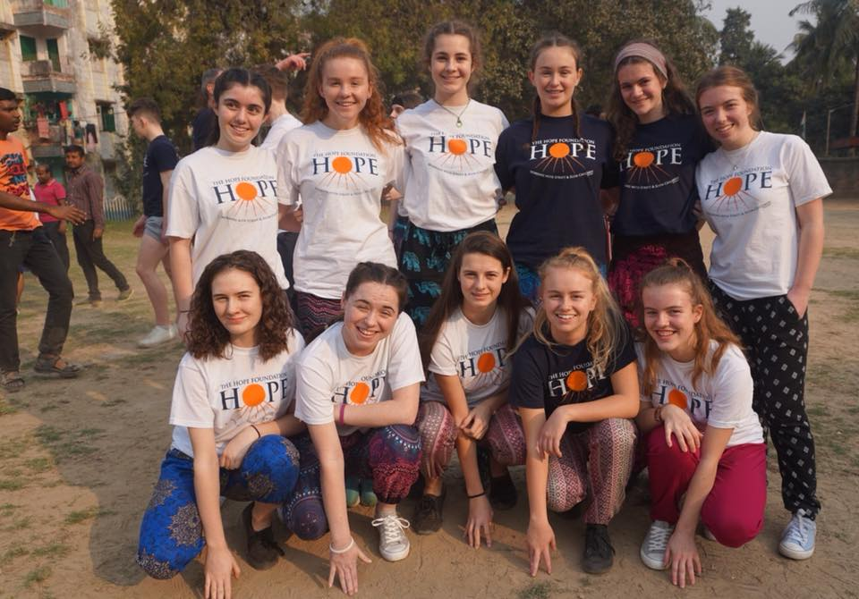
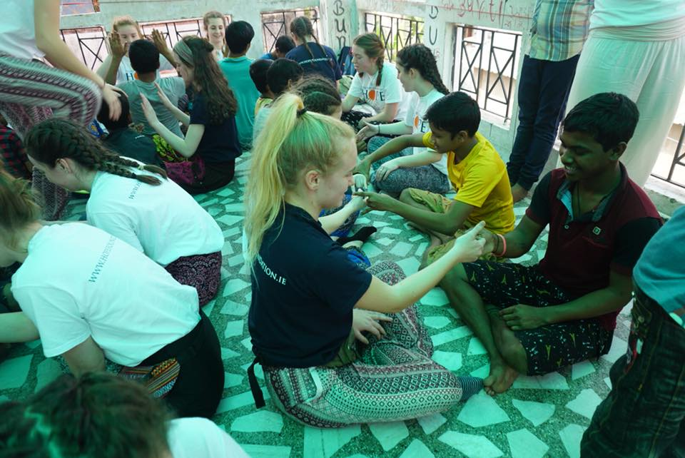
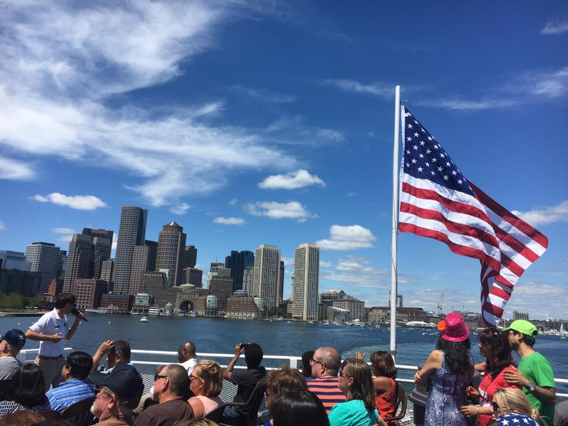

- 

- 

- 


I travelled to Kolkata with the Hope Foundation in February 2018. It was
an amazing experience. We had to fundraise over €3000 euro in order to travel which of course took a lot of time and
effort but was one hundred percent worth it.
The whole trip was so breath taking, the children we met were the most grateful
children I have ever met. It was so eye opening and made me re think so many thing when i returned home from the trip.
We take so much for granted as the kids we met have nothing but they appreciate absolutely everything.
I would encourage anyone to travel to Kolkata and I for sure wil be returning sometime in the future.
I have been to New York three times. It is such an amzing city with so many things to do. The highlight of the trip for me was visiting 9/11 memorial where the Twin Towers were. I also visited the Empire State Building, The statue of Liberty and of course Time Square.
New York is quite expensive, However the shopping is unbelievable and of course I did some damage to my Bank Account. I hope to return to New York again sometime in the future.